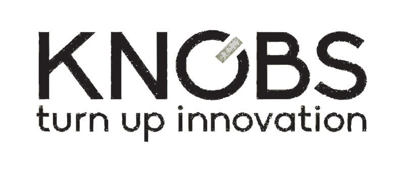

Elected Assistant Professor in Distributed Computing, Edge Computing & Applications, Department of Informatics and Computer Engineering, University of West Attica. Research focuses on distributed systems, blockchain infrastructure, decentralized identity, verifiable credentials, and verifiable AI.
About
My work focuses on designing, building, and operating live distributed infrastructure for research and teaching, including blockchain networks, decentralized identity systems, and verifiable AI applications.
Expertise
PhD in Computer Networks, with research specialization in information dissemination in unstructured peer-to-peer networks.
EU & National Research Projects, coordinating multidisciplinary teams and delivering applied outcomes in blockchain, cybersecurity, digital identity, and distributed systems.
Teaching Roles
Academic teaching in Blockchain, Distributed Computing, and Cybersecurity at UniWA and the University of Malta.
Co-author of the first Greek open-access postgraduate textbook on blockchain — theory, practice, and teaching scenarios for postgraduate learners.
Teaching and hands-on workshops on blockchain infrastructure, P2P networks, cybersecurity, smart contracts, decentralized applications, and security labs.
My teaching activities are closely connected with live infrastructure and hands-on experimentation, using Web3Edu and Besu Edu-Net to expose learners to real blockchain interaction, security workflows, and decentralized application concepts.
Research Interests
- Distributed computing & edge computing
- Blockchain infrastructure & decentralized architectures
- Digital identity & verifiable credentials
- Zero-knowledge proofs (ZKPs)
- Cybersecurity & regulatory resilience
- Blockchain infrastructure engineering
- Decentralized governance & DAOs
Professional Activities
- Professional roles — Member of INATBA’s Academic Advisory Board and Associate Editor at Frontiers in Blockchain.
- Scientific Consultant for KNOBS — advising on blockchain, digital trust, and Digital Product Passport activities.
- Founder & Coordinator, Web3Edu Ecosystem — developing applied research infrastructure for evidence-backed learning, learner identity, and decentralized education communities.
Academic, research & professional network

Current Focus
My current work focuses on digital trust infrastructures: secure blockchain networks, decentralized identity systems, verifiable learning records, and applied research environments grounded in live infrastructure and real learner interaction.
Active Development Projects
- Web3Edu Ecosystem — applied research stack for learner identity, labs, verifiable records, and blockchain experimentation.
- Besu Edu-Net — private Besu QBFT network with Blockscout, faucets, monitoring, and teaching integrations.
- Proof of Escape (PoE) — Web3 security learning game with on-chain challenges and NFT rewards.
- Account Abstraction onboarding — social login and smart-account flows for a lower entry barrier.
- ZKPs for verifiable credentials — use of zero-knowledge proofs in education to verify claims over learner credentials and progress while limiting disclosure of underlying data.
Teaching & Dissemination
- Blockchain & DLT courses — postgraduate teaching across blockchain, DLT, cybersecurity, and applied Web3.
- Security labs — hands-on labs for ZKPs, governance attacks, protocol exploits, consensus issues, and DApp security.
- Open educational resources — Web3 materials, open repositories, and Web3Edu integrated into teaching and outreach.
- Thesis supervision — digital identity, zero-knowledge proofs (ZKPs), DAO governance, and cybersecurity topics.
Web3Edu — Applied Research Infrastructure for Verifiable Learning
Web3Edu is an applied research and learning ecosystem built on a live Hyperledger Besu network. It connects hands-on technical activity, blockchain interaction, learner identity, and verifiable progress records to support evidence-backed education in Web3 and cybersecurity.
The ecosystem combines structured labs, wallet-based interaction, identity credentials, smart contract exercises, community experimentation, and governance-oriented learning paths.
Besu Edu-Net
Live Hyperledger Besu QBFT network for research and teaching, supporting smart contracts, identity experiments, Web3Edu labs, Blockscout exploration, faucet onboarding, and deployed educational exercises.
- 7-validator QBFT consensus network
- Hyperledger Besu v25.8.0
- Blockscout explorer and faucet services
- Identity and progression layer for Web3Edu
- Deployed educational DApps and smart contract exercises
16+ Hands-On Labs
Structured labs covering wallets, blockchain fundamentals, smart contracts, security, consensus, DeFi, identity, and governance — deployed on live Besu infrastructure.
- Progressive onboarding with social login and wallet-based interaction
- Labs connected to learner identity and progression
- Designed for students, workshops, and applied experimentation
Community & Governance
Web3Edu is evolving toward a contribution-aware learning community, where participation, technical progress, and governance experiments can be connected to transparent learner identity and verifiable records.
- Discord community for learners and contributors
- Governance model documented and under active development
- Identity-based progression and credential-aware access
- Open to contributions in labs, DApps, tools, and educational content
Applied Research & Development Portfolio
Web3Edu Ecosystem
Applied research ecosystem combining live Besu infrastructure, structured labs, learner identity, and verifiable records. Full details in the Web3Edu section above.
Besu Edu-Net Research Network
Private Hyperledger Besu QBFT network for applied research, Web3Edu labs, consensus experimentation, blockchain monitoring, and operational resilience.
- Seven-validator Besu QBFT network
- Blockscout explorer and faucet services
- Monitoring, logs, alerts, and operational hardening
- Smart contract deployments for identity, NFTs, ZKPs, oracles, and educational DApps
Blockchain Security Labs
Hands-on blockchain security labs covering consensus behavior, smart contract attack patterns, oracle manipulation, DeFi incident analysis, governance risks, and private testnet experimentation.
- Oracle design and price-feed defense patterns
- Incident walkthroughs and trace-based analysis
- Consensus and validator-behavior simulations
- ZKP, governance, and protocol-level security exercises

Proof of Escape (PoE)
Gamified Web3 learning DApp for blockchain security awareness, smart contract interaction, and challenge-based education.
- Quiz-based blockchain learning tasks
- Token and NFT-based rewards
- Festival edition for live events and workshops
- Deployed on the Web3Edu / Edu-Net infrastructure
DLT Fantasy League DApp
Experimental fantasy league management DApp exploring identity-linked participation, multi-team trades, voting, and DAO-style decision flows.
- Backend: Flask, PostgreSQL, and API-based data handling
- On-chain: smart contract logic for trading, voting, and identity-linked profiles
- Planned: DAO mechanisms for league decisions and dispute handling
Web3Edu Ecosystem Governance Framework
Governance model for decentralized educational ecosystems, exploring contribution-based participation, identity-aware progression, credential-gated actions, and non-speculative governance influence within Web3Edu.
- Governance flows for decentralized learning communities
- Identity and progression mechanisms for accountable participation
- DAO-oriented decision-making for proposals, contributions, and community evolution
- ZKP prototypes for privacy-preserving votes and selective disclosure
VeriAgent
Blockchain-anchored audit infrastructure for verifiable AI-agent execution provenance and integrity verification. Features Ed25519 agent identity (did:key), RFC8785 canonicalization, Merkle tree batching, and on-chain anchoring on Besu Edu-Net.
Curated Web3 Learning Resources
Curated open educational resources, repositories, and references for blockchain, Web3, smart contracts, decentralized identity, and applied cybersecurity learning.
Recent Research Projects
Current
TARDIS - Trustworthy and Resilient Decentralised Intelligence for Edge Systems
Horizon Europe project focused on trustworthy and resilient decentralized intelligence for edge systems, with emphasis on scalable coordination, heterogeneous swarms, and robust distributed decision-making.
- Role: Senior Researcher for NKUA
- Technical / Research focus: decentralized intelligence, edge systems, trustworthy coordination, and evaluation activities
- Contribution: evaluation support, use-case technical coordination, reporting, and integrating research outputs into prototypes
Earlier / completed
GENERA – Re-vitalising Energy Transition in Touristic Islands
LIFE EU project supporting energy transition in touristic islands through public engagement, digital tools, and sustainability-oriented behavioral change.
- Role: Senior Researcher for UniWA
- Technical / Research focus: digital engagement, gamification, sustainability transition, and Web 3.0 strategy
- Contribution: web engagement tools, dissemination, and stakeholder coordination
FASTER - First responder Advanced technologies for Safe and efficienT Emergency Response
Horizon 2020 project focused on technologies for first responders across the full emergency lifecycle, including planning, logistics, diagnostics, training, management, and resilient communications.
- Role: Senior Researcher for UniWA
- Technical / Research focus: secure communication, mobile applications, encrypted messaging, and first-responder support tools
- Contribution: technical coordination, reporting, and delivery of tools including MORSE, RESCUE, smart textiles, and K9 collar alerting components
ARTEMIS – Secure Supply Chain Traceability Management
ESPA (Research – Innovate) project developing a secure distributed software and hardware architecture for supply-chain traceability using blockchain, smart contracts, and embedded security.
- Role: Senior Researcher for iTrack Services (SME)
- Technical / Research focus: distributed architecture, blockchain-based traceability, smart contracts, and embedded security integration
- Contribution: architecture design, platform integration, technical meetings, and applied deliverables
Teaching & Educational Infrastructure
My teaching combines postgraduate-level blockchain and cybersecurity education with live infrastructure, hands-on labs, and applied experimentation through Web3Edu and Besu Edu-Net.
I also maintain a long-term academic teaching profile spanning 20+ years across related programmes and modules.
Postgraduate course on Blockchain and DLT, using Web3Edu and Besu Edu-Net for hands-on interaction with wallets, smart contracts, block explorers, and live educational infrastructure.
Postgraduate course on high-performance computing systems for blockchain applications, covering scalable distributed architectures, performance optimization, and applied blockchain infrastructure.
Course introducing cybersecurity and assurance concepts for DLT-related systems, including operational resilience, regulatory context, and applied security considerations.
Blockchain Security Labs
Design and delivery of Web3 security labs covering DeFi attack simulations, consensus behavior, oracle manipulation, and private testnet experimentation with Besu.
Representative Publications
Blockchain
Cybersecurity
ML / AI
IoT
A selection of representative publications is shown below. For the complete list, please visit my Google Scholar profile or consult my CV.
Blockchain & Web3
A survey on information security threats and solutions for Machine to Machine (M2M) communications
Journal of Parallel and Distributed Computing 109 (2017) 142–154
Application of blockchain technology in dynamic resource management of next generation networks
M. Xevgenis, D.G. Kogias, P. Karkazis, H.C. Leligou, C. Patrikakis
Information 11(12), 2020
IoT & Wireless Systems
Deep learning empowered wearable‑based behavior recognition for search and rescue dogs
Sensors 22(3), 2022, Article 993
Books & Educational Material
An introduction to blockchain (Greek Open-Access textbook)
C. Patrikakis, H. C. Leligkou, D.G. Kogias
Kallipos Editions, 2023 — ISBN: 978-618-5667-59-9 — DOI: 10.57713/kallipos-171
Contact
Let’s Connect
Open to academic, R&D, and industry collaborations in distributed systems, digital trust infrastructure, decentralized identity, and AI auditability.